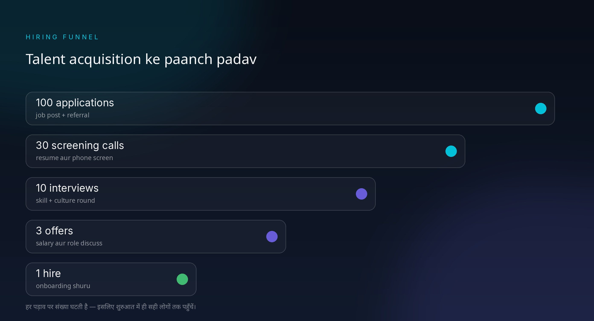

Talent Acquisition Kya Hai? Hiring Process aur 7 Steps
किसी भी छोटी कंपनी में सबसे महंगा फैसला गलत भर्ती होती है। एक गलत इंसान को टीम में लाने का खर्च salary तक सीमित नहीं रहता — उसकी training, टीम का ध्यान, client का भरोसा और वह समय जो दूसरे कामों में लग सकता था, सब जुड़ जाता है। यही कारण है कि आज "vacancy भरना" की जगह "talent acquisition" की बात होती है।
इस आर्टिकल में मैं समझाऊँगा कि talent acquisition kya hai, यह साधारण recruitment से किस तरह अलग है, एक practical 7-step process कैसा दिखता है, job description कैसे लिखें, interview में scorecard क्यों ज़रूरी है, offer कब और कैसे दें, और पहले 90 दिन में नए इंसान को कैसे टिकाएँ। साथ में वे गलतियाँ भी बताऊँगा जो छोटी टीमें सबसे ज़्यादा करती हैं।
छोटा जवाब: talent acquisition किसी खाली पद को भरने की प्रक्रिया नहीं, बल्कि लंबे समय की ज़रूरत देखकर सही लोगों को ढूँढने, जोड़ने और टिकाने की योजना है। इसमें role की स्पष्टता, sourcing, structured interview, scorecard, ठीक offer और onboarding — छह चीज़ें एक साथ चलती हैं।
Talent acquisition kya hai, simple shabdon me
Talent acquisition का मतलब है कंपनी की भविष्य की ज़रूरतों को देखकर लोगों की खोज, मूल्यांकन और जोड़ने की व्यवस्था बनाना। इसमें यह भी शामिल है कि आप किस तरह के कौशल अगले साल चाहिए होंगे, वे बाज़ार में मिल रहे हैं या नहीं, और अगर नहीं मिल रहे तो आप उन्हें खुद कैसे विकसित करेंगे।
इसका केंद्र एक इंसान नहीं, एक system होता है। जब कोई कर्मचारी जाता है, तो उसकी जगह भरने में जो 40 दिन लगते हैं, वे system की कमज़ोरी बताते हैं — न कि बाज़ार की। जिस कंपनी के पास pipeline, JD का साँचा, interview guide और referral का तरीका पहले से है, वही 40 दिन को 15 दिन में बदल सकती है।
एक उदाहरण लें। एक 12 लोगों की software कंपनी को एक support engineer चाहिए। साधारण तरीका — Naukri पर post डालो, 200 resume आए, उनमें से 30 को call, 6 का interview, और 45वें दिन एक इंसान join करता है जो तीसरे महीने में छोड़ देता है। talent acquisition वाला तरीका — पहले यह तय करो कि support engineer को असल में क्या करना है, अगले साल टीम कहाँ जाएगी, किन पाँच सवालों के जवाब चाहिए, और किन तीन जगहों से अच्छे लोग मिलते हैं। इसके बाद वही पद 20 दिन में भरता है और इंसान टिकता है।
Recruitment aur talent acquisition me farq
दोनों शब्द रोज़ एक-दूसरे की जगह इस्तेमाल होते हैं, पर सोच अलग है। recruitment प्रतिक्रियात्मक (reactive) होता है — पद खाली हुआ, अब भरो। talent acquisition सक्रिय (proactive) होता है — पद खाली होने से पहले ही लोगों से संपर्क बना रहता है।
| पहलू | Recruitment | Talent acquisition |
|---|---|---|
| समय | पद खाली होने पर शुरू | पद खाली होने से पहले से चलता रहता है |
| लक्ष्य | खाली जगह भरना | लंबे समय की क्षमता बनाना |
| दायरा | एक पद, एक चक्र | employer brand, pipeline, retention |
| माप | time to fill | quality of hire, 1 साल तक टिकना |
| किसका काम | HR या consultancy | HR + hiring manager + founder |
छोटी कंपनी के लिए इसका मतलब यह है — पूरा department खोलने की ज़रूरत नहीं। बस हर महीने दो-तीन घंटे निकालकर यह देखें कि अगले छह महीने में कौन सी भूमिका चाहिए होगी, और उन लोगों की सूची बनाएँ जिनसे बात करनी है। यही छोटी आदत talent pipeline कहलाती है।
7-step talent acquisition process
नीचे दिया process किसी भी आकार की टीम में चल सकता है। बड़ी कंपनियों में हर step का अलग इंसान होता है, छोटी में एक ही इंसान सब करता है — पर steps वही रहते हैं।

1. Zaroorat saaf karen
पहला सवाल यह नहीं कि किसे hire करना है, बल्कि यह कि यह काम क्यों करना है। अगर वह काम छह महीने में खत्म होने वाला है, तो शायद contract या freelancer ठीक है। अगर काम स्थायी है और टीम का हिस्सा बनना है, तो full-time सही है।
इस step पर तीन चीज़ें लिखें — पद का नाम, वह एक वाक्य जो बताए कि यह इंसान साल भर में क्या बदलेगा, और वे पाँच काम जो रोज़ होंगे। अगर यह तीन चीज़ें साफ नहीं हैं, तो कोई भी JD अच्छा नहीं लगेगा।
2. Job description likhen
JD विज्ञापन नहीं, एक फिल्टर है। अच्छा JD अयोग्य लोगों को खुद हटा देता है। इसमें तीन हिस्से रखें — काम क्या है (5 bullet), पहले 90 दिन में क्या उम्मीद है, और किन चीज़ों के बिना काम नहीं चलेगा।
सबसे आम गलती है 15 requirements की सूची बनाना, जिसमें से आधी असल में नहीं चाहिए। जब आप 15 लिखते हैं, तो अच्छे लोग भी सोचते हैं कि "शायद मैं पूरा नहीं उतरता" और apply नहीं करते। तीन से पाँच ज़रूरी योग्यताएँ लिखें और बाकी को "अच्छा होगा" वाले हिस्से में रखें।
भाषा सीधी रखें। "Dynamic self-starter with proven track record" जैसी लाइनें कुछ नहीं बतातीं। "आप हफ्ते में 20 support tickets खुद solve करेंगे और उनका हिसाब रखेंगे" — यह बताता है कि काम कैसा है।
3. Sourcing — log kahan milenge
Sourcing का मतलब है उन जगहों पर जाना जहाँ अच्छे लोग पहले से हैं। हर भूमिका के लिए तीन जगहें तय करें। उदाहरण — developer के लिए GitHub, local meetup और पुराने colleagues का referral; sales के लिए LinkedIn, industry WhatsApp group और customer referrals; designer के लिए Behance, Dribbble और college का पुराना network।
Referral सबसे सस्ता और सबसे भरोसेमंद ज़रिया है। पर उसे ठीक से चलाना पड़ता है — हर महीने टीम को याद दिलाएँ, referral का फायदा साफ बताएँ, और जवाब 48 घंटे में दें। जो referral दो हफ्ते तक बिना जवाब पड़ा रहे, वह अगली बार नहीं आएगा।
4. Screening — pehla filter
Screening में 15–20 मिनट का एक call पर्याप्त है। इसमें तीन बातें देखें — वह अभी क्या करता है, वह यह काम क्यों चाहता है, और salary तथा joining की उम्मीद क्या है। तीसरा सवाल पूछने में झिझक न करें; बाद में पता चलने से दोनों का समय बर्बाद होता है।
Call में एक ही इंसान सवाल पूछे और उसी समय नोट्स लिखे। अगर चार लोग अलग-अलग call करते हैं, तो वही सवाल चार बार पूछे जाते हैं और उम्मीदवार का भरोसा टूटता है।
5. Structured interview
Structured interview का मतलब है सबसे वही सवाल, वही क्रम और वही scoring. इससे पक्षपात कम होता है और तुलना संभव बनती है। हर सवाल के साथ पहले से तय करें कि अच्छा जवाब कैसा दिखेगा — 1 से 5 के पैमाने पर।
तीन तरह के सवाल काफी हैं। पहला, past behaviour — "पिछली नौकरी में सबसे मुश्किल bug कौन सा था और आपने क्या किया"। दूसरा, practical — "इस छोटे काम को अभी करके दिखाइए"। तीसरा, situation — "अगर client deadline पर अड़ जाए और टीम थकी हो, तो आप क्या करेंगे"।
Interview के अंत में उम्मीदवार से ज़रूर पूछें कि उसके कोई सवाल हैं। जवाब में वह क्या पूछता है, यह भी एक संकेत है — टीम, काम की प्रकृति, या सिर्फ छुट्टी और salary।
6. Decision aur offer
Interview के 24 घंटे के अंदर फैसला लें। अगर सब साथ बैठकर scorecard भरते हैं, तो बहस कम होती है और फैसला तेज़ होता है। फैसला तीन में से एक होगा — हाँ, नहीं, या "एक और round चाहिए"। तीसरा विकल्प तभी चुनें जब सच में कोई खास शंका हो; वरना वह सिर्फ टालमटोल है।
Offer में साफ लिखें — पद, salary, variable part, leave, notice period, joining date और probation। मौखिक वादे बाद में विवाद बनते हैं। Offer letter भेजने के बाद 24 घंटे में फोन करके पूछें कि सब समझ में आया या कोई सवाल है। यह छोटा call बहुत सारे offers बचाता है।
7. Onboarding — pehle 90 din
भर्ती joining के दिन खत्म नहीं होती। पहले हफ्ते का हर दिन पहले से तय हो — किससे मिलना है, कौन सा access चाहिए, पहला छोटा काम क्या है। पहले महीने में एक छोटा काम पूरा करवाएँ, जिससे नए इंसान को जीत का एहसास हो।
30, 60 और 90 दिन पर 20 मिनट की बैठक रखें। सवाल एक ही — "क्या चीज़ आपको धीमा कर रही है"। जवाब में जो आए, उसे ठीक करें। यही आदत नई भर्ती को छह महीने में छोड़ने से रोकती है।
Interview scorecard kaise banaye
Scorecard एक आधे पन्ने का फॉर्म है। ऊपर उम्मीदवार का नाम, नीचे चार से छह मापदंड, और हर मापदंड के आगे 1 से 5 का अंक तथा एक लाइन का कारण। मापदंड वही हों जो JD में लिखे हैं — तकनीकी कौशल, समस्या सुलझाना, बातचीत, और काम करने का तरीका।
अंक का मतलब पहले से तय करें। उदाहरण — 5 का मतलब "खुद उदाहरण देकर समझा सका और परिणाम बता सका", 3 का मतलब "बुनियादी समझ है, उदाहरण कमजोर", 1 का मतलब "सवाल समझ नहीं आया"। जब पैमाना तय होता है, तो दो interviewer के अंकों में बड़ा अंतर नहीं आता।
| मापदंड | क्या देखें | अच्छा संकेत |
|---|---|---|
| तकनीकी कौशल | असली काम का उदाहरण | अपनी गलती भी बता सके |
| समस्या सुलझाना | सोचने का क्रम | पहले सवाल पूछे, फिर जवाब |
| बातचीत | सरल भाषा में समझाना | बिना jargon के बात करे |
| भरोसा | commitment का इतिहास | पुराने कामों की सच्ची कहानी |
Employer brand — chhoti team ka hathiyar
बड़ी कंपनी salary और नाम से लोगों को खींचती है। छोटी टीम के पास दो चीज़ें होती हैं — सीधा असर और सीखने की गति। जो इंसान चार लोगों की टीम में काम करता है, वह तीन महीने में वह सीख सकता है जो बड़ी कंपनी में साल भर में मिलता है।
इसे दिखाना पड़ता है, कहना काफी नहीं। अपने काम के उदाहरण साझा करें — कौन सी चीज़ आपने बनाई, किस client को फायदा हुआ, टीम किस तरह काम करती है। जो उम्मीदवार interview से पहले आपकी साइट या LinkedIn देखकर आता है, वह पहले से आधा तैयार होता है।
एक और बात — जो उम्मीदवार चुने नहीं गए, उन्हें भी जवाब दें। दो लाइन का email काफी है। आज का rejected candidate कल का referral या customer हो सकता है।
Aam galtiyan jo bharti kharab karti hain
- जल्दबाज़ी में hire करना। "कोई तो चाहिए" वाली सोच छह महीने बाद महंगी पड़ती है।
- JD में कंपनी की तारीफ भर देना। उम्मीदवार काम जानना चाहता है, इतिहास नहीं।
- एक ही इंसान का फैसला। दूसरी राय न हो तो पक्षपात बढ़ता है।
- Salary पर देर तक चुप रहना। बाद में बात टूटती है और दोनों का समय जाता है।
- Joining के बाद अकेला छोड़ देना। पहले हफ्ते की उपेक्षा सबसे तेज़ छोड़ने वाला कारण है।
इनमें से ज़्यादातर गलतियाँ पैसे की नहीं, तैयारी की हैं। एक घंटे की योजना चार हफ्ते की भागदौड़ बचा सकती है।
Metrics jo dekhne chahiye
भर्ती को मापना ज़रूरी है, वरना हर बार वही गलती होगी। चार आंकड़े काफी हैं — time to fill (पद खाली होने से joining तक), offer acceptance rate, पहले साल में छोड़ने की दर, और hiring manager की संतुष्टि।
time to fill का लक्ष्य भूमिका के हिसाब से तय करें। support engineer के लिए 20 दिन ठीक है, किसी खास developer के लिए 45 दिन भी सामान्य है। जो कंपनी हर पद के लिए एक ही लक्ष्य रखती है, वह असल में कुछ नहीं माप रही।
सबसे ज़रूरी आंकड़ा है quality of hire — यानी छह महीने बाद hiring manager कहे कि "यह भर्ती सही थी"। इसे साल में दो बार पूछें और नतीजे लिखकर रखें। इसी से पता चलता है कि process में कौन सा step कमज़ोर है।
तकनीकी भूमिका के लिए छोटा practical test
चार घंटे का घर का assignment देने से बेहतर है 45 मिनट का live काम। उम्मीदवार को एक छोटा, असली जैसा problem दें और साथ बैठकर देखें कि वह कैसे सोचता है। इंटरनेट इस्तेमाल करने दें — असली काम में भी वही करेगा।
ध्यान दें कि वह सवाल पूछता है या नहीं। जो इंसान बिना सवाल किए काम शुरू कर देता है, वह असली प्रोजेक्ट में गलत दिशा में घंटे लगा सकता है। जो पहले "यह data कहाँ से आएगा" पूछता है, वह अक्सर बेहतर साथी साबित होता है।
Test का उद्देश्य यह नहीं कि वह सब जानता है। उद्देश्य यह है कि आप देखें कि जो नहीं जानता, उसे वह कैसे सीखता है।
मैंने भर्ती में क्या सीखा
सबसे बड़ी सीख यह रही कि गलत भर्ती की जड़ अक्सर interview में नहीं, JD में होती है। जब मैंने एक पद के लिए पाँच की जगह तीन ज़रूरी योग्यताएँ लिखीं, तो अर्जियों की संख्या घटी, पर हर अर्जी पहले से ज़्यादा करीब थी। छाँटने का समय आधा हो गया।
दूसरी सीख — scorecard न हो तो बातचीत यादों पर चलती है। पहला उम्मीदवार अच्छा लगता है क्योंकि वह पहला था, और आखिरी वाला इसलिए याद रहता है क्योंकि वह ताज़ा है। कागज़ पर लिखे अंक इस पक्षपात को कम करते हैं।
तीसरी सीख — joining के बाद का पहला हफ्ता भर्ती का सबसे सस्ता हिस्सा है और सबसे ज़्यादा नज़रअंदाज़ किया जाता है। जिस दिन मैंने पहले हफ्ते का घंटे-दर-घंटे plan बनाया, उसके बाद छोड़ने की दर साफ कम हुई। नए इंसान को सिर्फ काम नहीं, दिशा चाहिए होती है।
अक्सर पूछे जाने वाले सवाल
क्या छोटी कंपनी को अलग HR चाहिए?
ज़रूरी नहीं। शुरुआत में founder या एक senior इंसान यह काम संभाल सकता है, बशर्ते process लिखा हो और हर महीने दो घंटे pipeline पर लगें।
Talent acquisition में सबसे ज़्यादा समय किस चीज़ में जाता है?
स्क्रीनिंग और interview में। इसलिए JD साफ और scorecard तय होने पर सबसे ज़्यादा समय बचता है — गलत लोगों की छँटाई पहले ही हो जाती है।
Intern को कैसे चुनें?
सीखने की इच्छा और बुनियादी समझ देखें। एक छोटा practical काम दें और देखें कि सवाल पूछता है या नहीं। साथ में यह भी साफ करें कि तीन महीने में उसे क्या सीखना है।
Offer के बाद उम्मीदवार मुकर जाए तो?
पहले कारण पूछें — दूसरा offer, परिवार, या joining में देरी। अगर कारण salary है और बजट है, तो एक बार बात करें। वरना pipeline से अगले नाम पर जाएँ, और यह देखें कि offer से पहले बातचीत में कहाँ कमी रह गई।
भर्ती में AI का इस्तेमाल कर सकते हैं?
Resume छाँटने और पहला सवाल तैयार करने में मदद ली जा सकती है, पर फैसला इंसान का होना चाहिए। किसी उम्मीदवार को सिर्फ tool के अंक पर हटाना ठीक नहीं — कारण लिखा जाना चाहिए।
अगर आप टीम बना रहे हैं, तो Agile methodology की गाइड और project management tools वाला आर्टिकल काम आएंगे। तकनीकी टीम के लिए unit testing की बुनियाद भी पढ़ें।
आगे पढ़ें: structured interview और scorecard के मानक SHRM पर देखें, और भर्ती के आंकड़ों के तरीके LinkedIn Talent Blog पर। हर देश के labour rules अलग होते हैं, इसलिए offer letter से पहले स्थानीय सलाह लें।